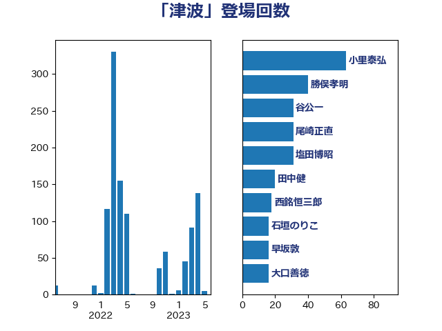

単語「津波」

| 小里泰弘 | 自由民主党 | 63 回 |
| 勝俣孝明 | 自由民主党 | 40 回 |
| 谷公一 | 自由民主党 | 31 回 |
| 尾崎正直 | 自由民主党 | 31 回 |
| 塩田博昭 | 公明党 | 31 回 |
| 田中健 | 国民民主党 | 20 回 |
| 西銘恒三郎 | 自由民主党 | 18 回 |
| 石垣のりこ | 立憲民主党 | 16 回 |
| 早坂敦 | 日本維新の会 | 16 回 |
| 大口善徳 | 公明党 | 16 回 |
| 渡辺博道 | 自由民主党 | 15 回 |
| 柴田巧 | 日本維新の会 | 15 回 |
| 芳賀道也 | 国民民主党 | 13 回 |
| 斉藤鉄夫 | 公明党 | 13 回 |
| 鎌田さゆり | 立憲民主党 | 11 回 |
| 紙智子 | 日本共産党 | 11 回 |
| 和田政宗 | 自由民主党 | 11 回 |
| 足立敏之 | 自由民主党 | 10 回 |
| 梶原大介 | 自由民主党 | 10 回 |
| 重徳和彦 | 立憲民主党 | 9 回 |
| 鈴木敦 | 国民民主党 | 8 回 |
| 野田国義 | 立憲民主党 | 8 回 |
| 津島淳 | 自由民主党 | 8 回 |
| 岡本あき子 | 立憲民主党 | 8 回 |
| 高野光二郎 | 自由民主党 | 7 回 |
| 進藤金日子 | 自由民主党 | 7 回 |
| 田村貴昭 | 日本共産党 | 7 回 |
| 横沢高徳 | 立憲民主党 | 7 回 |
| 庄子賢一 | 公明党 | 7 回 |
| 山崎誠 | 立憲民主党 | 7 回 |
| 森まさこ | 自由民主党 | 6 回 |
| 岩本剛人 | 自由民主党 | 6 回 |
| 小沢雅仁 | 立憲民主党 | 6 回 |
| 奥下剛光 | 日本維新の会 | 6 回 |
| 秋葉賢也 | 自由民主党 | 5 回 |
| 石井苗子 | 日本維新の会 | 5 回 |
| 渡辺周 | 立憲民主党 | 5 回 |
| 根本幸典 | 自由民主党 | 5 回 |
| 室井邦彦 | 日本維新の会 | 5 回 |
| 大野泰正 | 自由民主党 | 5 回 |
| 吉田宣弘 | 公明党 | 5 回 |
| 中川康洋 | 公明党 | 5 回 |
| 階猛 | 立憲民主党 | 4 回 |
| 長友慎治 | 国民民主党 | 4 回 |
| 野村哲郎 | 自由民主党 | 4 回 |
| 谷田川元 | 立憲民主党 | 4 回 |
| 西村明宏 | 自由民主党 | 4 回 |
| 笠井亮 | 日本共産党 | 4 回 |
| 永岡桂子 | 自由民主党 | 4 回 |
| 櫻井充 | 自由民主党 | 4 回 |
| 後藤茂之 | 自由民主党 | 4 回 |
| 広瀬めぐみ | 自由民主党 | 4 回 |
| 岸田文雄 | 自由民主党 | 4 回 |
| 小島敏文 | 自由民主党 | 4 回 |
| 嘉田由紀子 | 無所属 | 4 回 |
| 冨樫博之 | 自由民主党 | 4 回 |
| 佐々木さやか | 公明党 | 4 回 |
| 上月良祐 | 自由民主党 | 4 回 |
| 金子恵美 | 立憲民主党 | 3 回 |
| 細田博之 | 自由民主党 | 3 回 |
| 空本誠喜 | 日本維新の会 | 3 回 |
| 櫛渕万里 | れいわ新選組 | 3 回 |
| 末松信介 | 自由民主党 | 3 回 |
| 木村英子 | れいわ新選組 | 3 回 |
| 朝日健太郎 | 自由民主党 | 3 回 |
| 岸真紀子 | 立憲民主党 | 3 回 |
| 小池晃 | 日本共産党 | 3 回 |
| 中村裕之 | 自由民主党 | 3 回 |
| 鰐淵洋子 | 公明党 | 2 回 |
| 音喜多駿 | 日本維新の会 | 2 回 |
| 阿部知子 | 立憲民主党 | 2 回 |
| 長谷川岳 | 自由民主党 | 2 回 |
| 谷川とむ | 自由民主党 | 2 回 |
| 臼井正一 | 自由民主党 | 2 回 |
| 羽田次郎 | 立憲民主党 | 2 回 |
| 石川香織 | 立憲民主党 | 2 回 |
| 石井浩郎 | 自由民主党 | 2 回 |
| 渡辺猛之 | 自由民主党 | 2 回 |
| 浜口誠 | 国民民主党 | 2 回 |
| 沢田良 | 日本維新の会 | 2 回 |
| 池田佳隆 | 自由民主党 | 2 回 |
| 森山浩行 | 立憲民主党 | 2 回 |
| 森屋隆 | 立憲民主党 | 2 回 |
| 枝野幸男 | 立憲民主党 | 2 回 |
| 林芳正 | 自由民主党 | 2 回 |
| 星野剛士 | 自由民主党 | 2 回 |
| 新妻秀規 | 公明党 | 2 回 |
| 工藤彰三 | 自由民主党 | 2 回 |
| 岡田克也 | 立憲民主党 | 2 回 |
| 山崎正恭 | 公明党 | 2 回 |
| 山口壯 | 自由民主党 | 2 回 |
| 小山展弘 | 立憲民主党 | 2 回 |
| 宗清皇一 | 自由民主党 | 2 回 |
| 大野敬太郎 | 自由民主党 | 2 回 |
| 堀場幸子 | 日本維新の会 | 2 回 |
| 伊藤孝江 | 公明党 | 2 回 |
| 仁木博文 | 無所属 | 2 回 |
| 中野英幸 | 自由民主党 | 2 回 |
| 中川郁子 | 自由民主党 | 2 回 |
| 麻生太郎 | 自由民主党 | 1 回 |
| 鬼木誠 | 立憲民主党 | 1 回 |
| 高木真理 | 立憲民主党 | 1 回 |
| 高市早苗 | 自由民主党 | 1 回 |
| 須藤元気 | 無所属 | 1 回 |
| 青木愛 | 立憲民主党 | 1 回 |
| 鈴木英敬 | 自由民主党 | 1 回 |
| 鈴木俊一 | 自由民主党 | 1 回 |
| 逢坂誠二 | 立憲民主党 | 1 回 |
| 近藤和也 | 立憲民主党 | 1 回 |
| 赤羽一嘉 | 公明党 | 1 回 |
| 赤澤亮正 | 自由民主党 | 1 回 |
| 豊田俊郎 | 自由民主党 | 1 回 |
| 西岡秀子 | 国民民主党 | 1 回 |
| 菅直人 | 立憲民主党 | 1 回 |
| 舩後靖彦 | れいわ新選組 | 1 回 |
| 竹谷とし子 | 公明党 | 1 回 |
| 竹詰仁 | 国民民主党 | 1 回 |
| 神田潤一 | 自由民主党 | 1 回 |
| 神津たけし | 立憲民主党 | 1 回 |
| 石井章 | 日本維新の会 | 1 回 |
| 石井準一 | 自由民主党 | 1 回 |
| 田野瀬太道 | 無所属 | 1 回 |
| 田村まみ | 国民民主党 | 1 回 |
| 片山さつき | 自由民主党 | 1 回 |
| 瀬戸隆一 | 自由民主党 | 1 回 |
| 深澤陽一 | 自由民主党 | 1 回 |
| 浜田靖一 | 自由民主党 | 1 回 |
| 水岡俊一 | 立憲民主党 | 1 回 |
| 横山信一 | 公明党 | 1 回 |
| 梅村みずほ | 日本維新の会 | 1 回 |
| 松村祥史 | 自由民主党 | 1 回 |
| 松本剛明 | 自由民主党 | 1 回 |
| 松山政司 | 自由民主党 | 1 回 |
| 掘井健智 | 日本維新の会 | 1 回 |
| 岩渕友 | 日本共産党 | 1 回 |
| 山際大志郎 | 自由民主党 | 1 回 |
| 山東昭子 | 自由民主党 | 1 回 |
| 山口那津男 | 公明党 | 1 回 |
| 山下芳生 | 日本共産党 | 1 回 |
| 小熊慎司 | 立憲民主党 | 1 回 |
| 寺田静 | 無所属 | 1 回 |
| 宮口治子 | 立憲民主党 | 1 回 |
| 塩崎彰久 | 自由民主党 | 1 回 |
| 坂井学 | 自由民主党 | 1 回 |
| 國重徹 | 公明党 | 1 回 |
| 吉田とも代 | 日本維新の会 | 1 回 |
| 加藤明良 | 自由民主党 | 1 回 |
| 佐藤英道 | 公明党 | 1 回 |
| 伴野豊 | 立憲民主党 | 1 回 |
| 今井絵理子 | 自由民主党 | 1 回 |
| 中川貴元 | 自由民主党 | 1 回 |
| 下野六太 | 公明党 | 1 回 |
| 下村博文 | 自由民主党 | 1 回 |
| 上杉謙太郎 | 自由民主党 | 1 回 |
| 上川陽子 | 自由民主党 | 1 回 |
| 三浦靖 | 自由民主党 | 1 回 |